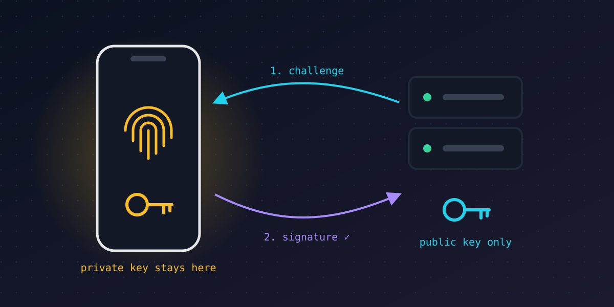

// web security · 6 min read
Passwords are dying. Here's how passkeys replace them.
Published Nov 11, 2026

Passwords ask people to do something humans are bad at: invent long random strings, a different one for every site, and never type them into the wrong page. Unsurprisingly, stolen and phished credentials remain one of the most common ways attackers get in. Passkeys are the industry's answer, and they work very differently.
What's wrong with passwords
- They're shared secrets. You know the password and so does the server, or at least a hash of it. A breach of the server leaks something an attacker can try to crack.
- They get reused. One leaked password unlocks every site where it was used. Attackers automate this as "credential stuffing".
- They can be phished. A convincing fake login page receives your real password, and you have no reliable way to tell.
The core idea: a key pair, not a secret
A passkey uses public-key cryptography. When you create one for a site, your device generates two linked keys:
- A private key that stays on your device or in your password manager, ideally protected by secure hardware. It is never sent to the website.
- A public key that is given to the website. It can check signatures but can't create them, so it's safe to store openly.
Signing in then takes three steps:
- The website sends a random challenge, a one-time number.
- Your device asks you to unlock it with a fingerprint, face or PIN. That check happens locally, so your biometrics never leave the device.
- The device signs the challenge with the private key and sends back the signature, which the website verifies with your public key.
Why phishing stops working
Every passkey is tied to the domain it was created for. Your browser, not you, checks which site is asking. If you land on examp1e.com instead of example.com, the browser simply doesn't offer the passkey. There is no password to type into the fake page, so there's nothing to steal, however convincing it looks.
Server breaches get less scary too. A stolen database of public keys doesn't help an attacker sign in anywhere.
Under the hood
Passkeys are built on the FIDO2 standards, and in the browser on the WebAuthn API. Developers call navigator.credentials.create() to register a passkey and navigator.credentials.get() to sign in. Most password managers and the major phone and computer platforms can now sync passkeys between your devices, so losing one phone doesn't lock you out.
The catches
- Account recovery is still the weak spot. If a site falls back to an SMS code or email link when you lose access, that fallback becomes the target.
- Moving between ecosystems has historically been awkward, though standards for exporting passkeys between providers are arriving.
- Shared and borrowed devices need extra steps, such as scanning a QR code with your phone.
The takeaway
Passkeys remove the shared secret that makes passwords so fragile. Until every account supports them, a password manager with long random passwords is the next best thing. The lab shows how quickly weak passwords fall, and what "strong" actually means.